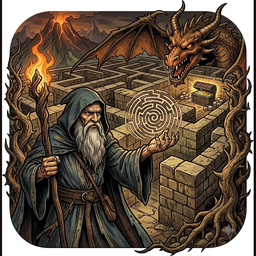

MazeMage Support
Maze running with treasure, hazards, keys and portals, for iPhone and iPad
MazeMage is a maze game. Guide your mage from the start to the glowing portal before time runs out, gathering coins and treasure along the way. Coins buy permanent upgrades and one-use abilities. Weekly mazes put you on a leaderboard against players with a similar level of upgrades.
How to play
- Draw a path with one finger from the mage through the corridors. He starts walking as you draw and keeps going after you lift. Tapping a cell in a straight line is a quick alternative.
- Two fingers pan the view; pinch to zoom. The buttons bottom-left return to the mage or fit the whole maze.
- Coins and chests are only collected by walking through them. Shortcuts save time but cost coins.
- Spiders bite your health, orcs steal a share of the coins you've picked up this run, and webs slow you for a few steps.
- Gates need the key of the same color, found somewhere earlier in the maze. Keys stay with you for the rest of the run.
- Paired portals teleport you to their twin.
- Finishing under par earns a bigger bonus. Running out of time or health loses the run's coins, but never your bank.
Abilities
Buy them in the Shop with coins. Wall-Walk passes through one wall. Teleport jumps to any cell within five steps. Reveal lifts the fog for five seconds. Life Elixir revives you once. Using any of them marks the run as assisted; on the weekly leaderboards, clean runs always rank above assisted ones.
Weekly challenge and tiers
Seven mazes change every Monday. Your leaderboard tier depends on how many upgrades you own, so you compete with players who have spent about as much as you have. The Shop warns you before a purchase moves you up a tier.
Purchases and ads
Coin packs, character skins, and an Ad-Free subscription are available in the Shop. Use Restore Purchases in Settings after reinstalling or changing devices. Subscriptions are managed in your Apple ID settings. The game shows an ad after every few completed levels unless you're subscribed; rewarded ads are always optional.
Troubleshooting
- No sound: check the Music and Effects switches in Settings (the gear on the start screen) and the device volume.
- Leaderboards missing: sign in to Game Center in the iOS Settings app, then open the weekly screen.
- A purchase didn't arrive: Settings → Restore Purchases. If it still doesn't show, email us with the receipt.
Contact
Bugs, ideas, and questions: smythe.jared@gmail.com.